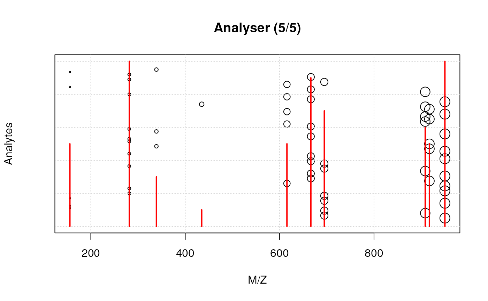

mstut.RdThis is the constructor function to generate a set of ions that can later be analysed with `analyse()` and detected with `detect()`.
new_ions(npeaks = 10, mzrange = c(100, 1000), nimg = 100)
analyse(x, sleep = 0.1)
analyze(x, sleep = 0.1)
detect(x, new = FALSE)
spectrum(x, ...)A `numeric` scalar defining the number of unique peaks (M/Z values). Default is 10.
A `numeric` of length 2 defining the range of possible M/Z values. Default is `c(100, 1000)`.
A `numeric` scalar. When analysing the ions, their separation along their M/Z values will be split along a sequence of length `nimg`. Default is 100.
An object of class `ions`.
How much time to wait before producing the next plot.
A `logical` scalar, indicating if the separated ions (last frame of calling `analyse) should be plotting, or whether the detection should be overlaid. Default is `FALSE`, to add the plot on top of the opened device.
Additional arguments passed to [graphics::plot()].
An object of class `ions`.
`analyse`, `detect` and `spectrum` are used for their side effect or producing plots. They all invisibly return `NULL`.
set.seed(1L)
x <- new_ions(nimg = 5)
x
#> Object of class 'ions':
#> # analyze(.); detect(.); spectrum(.)
analyse(x)
detect(x)

spectrum(x)